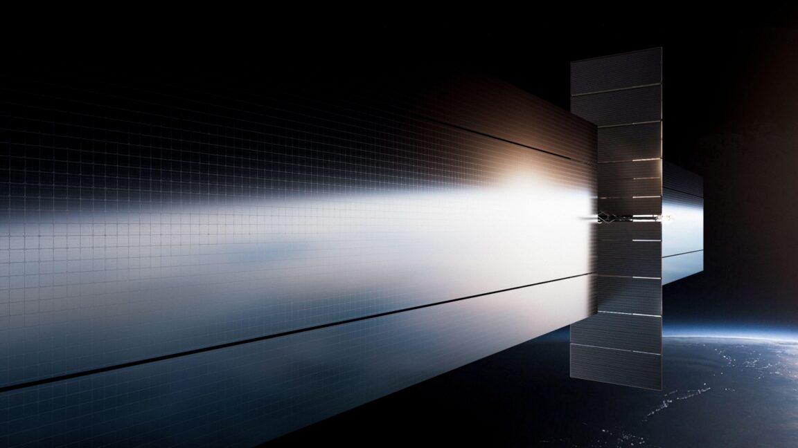

Technology · 26 Nov 2026
The FCC has authorized SpaceX to deploy 1 million satellites

This constellation would increase the number of satellites in orbit by roughly 50-fold.
Multiple independent publishers are reporting on the same development: The FCC has authorized SpaceX to deploy 1 million satellites.
The available reports place the development in the Technology category. The accounts were compared for agreement on the central event rather than simply shared names or broad topics.
One of the available reports describes the development this way: This constellation would increase the number of satellites in orbit by roughly 50-fold.
Readers should consult the linked source reports for additional context, updates and details that may change as the story develops.
Sources
This article was produced by the C. O. Eric AI Newsroom from the cited sources. It is published only after automated evidence and safety checks.